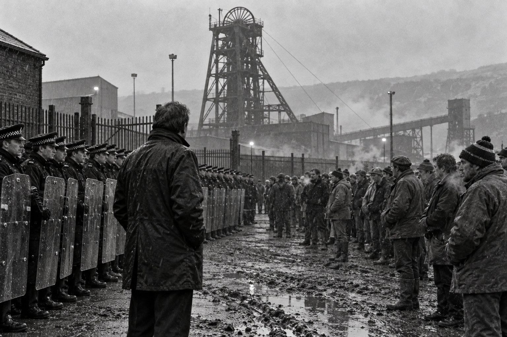

Пикет

Глава первая. Двадцать шахт
Я вижу два сословия, которые во всём зависят одно от другого, и при этом каждое считает выгоду другого прямо противоположной своей.
— Элизабет Гаскелл, «Север и Юг» (1855)
По воскресеньям у Льюисов ели в два часа, и к двум часам на кухне не оставалось места, где можно было бы стоять, не мешая. Дом на Ричардсон-стрит, который они с Вэл купили в восемьдесят первом, в рассрочку на двадцать пять лет, был такой же, как все дома в Уолсенде: две комнаты внизу, две наверху, кухня с окном во двор. Только в этом доме была ванная, пристроенная прежним хозяином над кухней, и Вэл говорила, что купила дом ради ванной, а мужа взяла в придачу.
В то воскресенье, одиннадцатого марта, на кухне были все: Вэл у плиты, Лин под столом, где она устроила дом для своей куклы, годовалый сын, которого все в доме звали просто Малыш, на высоком стульчике, с ложкой, которой он колотил по подносу, и Кевин Хэррисон, брат Вэл, у окна, с кружкой чая и с газетой.
Кевину было двадцать восемь. Он работал на Уэстоу, большой шахте в Саут-Шилдсе, где выработки уходили далеко под море и где на смене было больше двух тысяч человек. Работал он забойщиком с семнадцати лет, как его отец и дед, и руки у него были такие, какие бывают только у шахтёров: широкие, в мелких синих точках угольной пыли, въевшейся под кожу навсегда, как татуировка. По воскресеньям он приезжал к сестре на обед на старом «Форде» с ржавыми крыльями и всегда привозил Лин кулёк леденцов, а Малышу — что-нибудь, чем можно стучать.
— Двадцать шахт, — сказал Кевин, не отрываясь от газеты. — Двадцать тысяч человек. Больше трети — у нас, на северо-востоке. Макгрегор объявил во вторник. — Он сложил газету и посмотрел на Робби. — Ты читал?
Робби читал. Об этом читали все. Во вторник, шестого марта, Угольное управление, государственная корпорация, которой с сорок седьмого года принадлежали все шахты страны, объявило, что за год закроет двадцать шахт, которые не приносят дохода. Председатель управления Иэн Макгрегор, шотландец, приехавший из Америки, где руководил металлургическими компаниями, говорил о шахтах так, как говорят о строчках в бухгалтерской книге. В феврале, за месяц до этого, он приезжал на шахту Эллингтон в Нортумберленде, и там четыре сотни шахтёров, протестовавших против закрытия соседней шахты Бейтс, обступили его так плотно, что повалили забор, и председатель Угольного управления упал на землю. Снимок обошёл все газеты. Кевин повесил вырезку у себя над кроватью.
— Читал, — сказал Робби.
— Ну и что скажешь, детектив?
Робби был детектив-констеблем уже третий год. В восемьдесят первом его перевели из участковых в уголовный розыск Уолсенда, где после истории с Троддом и клапанами детектив-сержант Флинт, к общему удивлению, сам за него попросил. Он ходил теперь на работу не в форме, а в сером пиджаке, который Вэл купила ему на распродаже в «Фенвике», и носил с собой не дубинку, а блокнот. Мать, когда узнала о переводе, плакала от гордости. Отец сказал, что теперь Робби будет ловить не тех, кто носит медь, а тех, кто носит клапаны, и это правильно.
— Ничего не скажу, Кев, — ответил Робби. — Я полицейский.
— Вот именно, — сказал Кевин, и на кухне вдруг стало тихо, только Малыш стучал ложкой.
Вэл поставила на стол противень с ростбифом и йоркширским пудингом, вытерла руки о фартук и посмотрела на брата, а потом на мужа.
— В этом доме, — сказала она, — за столом про шахты не говорят. Ни про шахты, ни про полицию. Кевин, сядь. Робби, нарезай мясо. Лин, вылезай из-под стола и мой руки.
Кевин сел. Робби нарезал мясо. Лин вылезла из-под стола. Ели молча, и только когда Вэл разливала подливку, Кевин сказал, ни к кому не обращаясь:
— В Йоркшире уже стоят. С пятницы. Кортонвуд. Им сказали, что через месяц закроют, а там ещё угля на пять лет. — Он отрезал кусок пудинга. — В четверг исполком разрешил бастовать по областям. Без общего голосования. Скаргилл не хочет голосования, говорят, боится, что проиграет. С понедельника стоим и мы.
— Кевин, — сказала Вэл.
— Я ем, Вэл. Я ем и молчу.
После обеда, когда Вэл мыла посуду, а Лин и Малыш спали наверху, Робби вышел с Кевином во двор покурить. Двор был маленький, мокрый, с бельевой верёвкой и сараем, где Робби держал велосипед и коробку с книгами, которую так и не распаковал после переезда. Над крышами домов напротив, в конце улицы, в тумане стоял серый корпус ещё одного корабля. В Уолсенде улицы всё ещё кончались кораблями, хотя, говорили, ненадолго.
— Ты будешь там, — сказал Кевин, глядя на корабль. — У ворот. В строю. Они всех поставят, я знаю. И твой розыск тоже.
— Может быть.
— Не может быть. Точно. — Кевин бросил окурок в лужу. — Я тебе одно скажу, Робби. Я тебя не трону. Ты мне зять, ты Вэл муж, ты детям отец. Но если меня там кто-нибудь из ваших тронет, я отвечу. И мне будет всё равно, в какой он форме.
— Я понимаю.
— Ничего ты не понимаешь. — Кевин повернулся к нему. — Ты четырнадцать лет получаешь зарплату от государства и думаешь, что государство — это закон. А для нас государство — это Макгрегор с его бухгалтерской книгой. Двадцать шахт. Это не цифра, Робби. Это двадцать посёлков, где через год никто не будет работать. Там будут жить, рожать детей, хоронить стариков. Только работать там будет негде.
Он надел кепку и ушёл, не попрощавшись с Вэл, хотя раньше всегда прощался. Робби слышал, как на улице завёлся старый «Форд», как он прочихался и уехал.
Вэл стояла в дверях кухни, вытирая тарелку.
— Он прав? — спросила она.
— В чём?
— Что тебя поставят у ворот.
Робби посмотрел на корабль в тумане.
— Наверное, прав, — сказал он.
В понедельник, двенадцатого марта, профсоюз горняков объявил забастовку по всей стране, и на Уэстоу утренняя смена не спустилась в шахту. Клеть стояла наверху, колесо на копре не крутилось, и над Саут-Шилдсом впервые за много лет было слышно чаек.
Глава вторая. Автобус
То Томми то, то Томми сё, и «вон его, скота!»,
А «спасибо, мистер Аткинс» — когда забьют барабаны.— Редьярд Киплинг, «Томми» (1890)
Автобус был старый, полицейский, синий, с решётками на окнах и с печкой, которая грела только ноги водителю. Он отходил от двора участка в четыре утра, в темноте, и в нём сидели двадцать два человека: сержант, девятнадцать констеблей в форме и двое из уголовного розыска, которых переодели в форму накануне вечером и которые чувствовали себя в ней как в чужом пальто. Одним из двоих был детектив-констебль Льюис.
Приказ пришёл в среду. В Лондоне, в здании Скотленд-Ярда, открыли какой-то Национальный центр, через который полиции всех графств теперь одалживали друг другу людей, как соседи одалживают лестницу. Нортумбрийская полиция отдавала в Ноттингемшир сто сорок человек на десять дней. Людей в форме не хватало, и суперинтендант распорядился взять по двое из каждого отдела уголовного розыска, кто моложе и кто не ведёт ничего срочного. Детектив-инспектор Керр, сменивший в Уолсенде вышедшего на пенсию Флинта, выбрал Льюиса и молодого Пёрси. Керр был из тех начальников, которые всегда выбирают справедливо и почему-то всегда одних и тех же.
Вэл собрала ему сумку вечером, молча: бельё на десять дней, тёплый свитер, термос, пакет с бутербродами. Потом подумала и положила сверху плитку шоколада, как клала в школьный ранец для Лин. Она ничего не сказала про Кевина. Робби тоже.
Ехали семь часов. На севере ещё лежал снег по обочинам, в Йоркшире шёл дождь, а в Ноттингемшире была весна, и констебли с Тайна смотрели на неё через решётки, как на заграницу. Так она и выглядела. Здешние шахтёры в большинстве своём работали. Они сказали, что не будут бастовать без голосования, и теперь в Ноттингемшир со всей страны ехали летучие пикеты из Йоркшира, из Уэльса, с Тайна, чтобы при воротах уговорить их остановиться. А полиция со всей страны ехала туда же, чтобы пикеты до ворот не доехали.
Их поставили на дорогу. Это называлось «пункт проверки», а было двумя полицейскими фургонами поперёк сельского шоссе и десятком констеблей с фонарями. Инструкция была простая: останавливать машины, спрашивать, куда едут, и, если в машине мужчины в рабочих куртках и с чужими номерами, разворачивать. А если не разворачиваются, то задерживать за то, что мешают полиции предотвратить нарушение общественного порядка. Сержант прочёл эту формулировку с листка дважды, и Робби заметил, что тот сам её не совсем понимает.
Первые два дня ехали тракторы, фермеры на лендроверах, почтальон, женщина с детьми, которая везла их в школу и каждое утро спрашивала Робби, не надоело ли ему. На третий день, в шесть утра, из тумана вышли четыре машины подряд, старые, набитые людьми до отказа. Номера были северные.
Первая машина была «Форд» с ржавыми крыльями.
Робби узнал её раньше, чем она остановилась. Он стоял вторым от обочины, с фонарём, и сержант из Ноттингема, старший на посту, наклонился к окну водителя и спросил, куда едут. Водитель сказал, что на рыбалку. В машине засмеялись. Сержант спросил, где удочки. Водитель сказал, что забыли дома. Сержант сказал, что в таком случае им стоит вернуться за удочками, прямо сейчас, и что дальше по этой дороге они не поедут.
Задняя дверь открылась, и из машины вылез Кевин.
Он увидел Робби сразу, как будто знал, что он тут. Может быть, и знал: Вэл могла сказать матери, а мать — сыну. Он стоял у открытой двери, в тёмной стёганой куртке с кожаными налокотниками, какую носили все шахтёры, и смотрел на Робби. На форму, на фуражку, на фонарь в руке.
— Расставили, — сказал он громко, так, чтобы слышали все. — Наших же и расставили. Чтоб свои своих разворачивали. Хитро.
Сержант из Ноттингема посмотрел на Кевина, потом на Робби.
— Знакомый?
— Шурин, сэр, — сказал Робби.
Сержант сказал «ага» и ничего больше не сказал, но через минуту, когда водитель «Форда» начал спорить о свободе передвижения и о том, что Англия — не Россия, сержант отослал Робби к фургону за рацией, которая была не нужна.
От фургона Робби слышал, как спор кончился, как хлопнули двери и как четыре машины, одна за другой, развернулись на узком шоссе, заезжая колёсами в грязь обочины, и уехали обратно в туман. Старый «Форд» прочихался, как тогда на Ричардсон-стрит. Обратно Кевин не обернулся.
Вечером, в спортзале старой военной базы, где их разместили на раскладушках в три ряда, молодой Пёрси спросил его с соседней раскладушки:
— Это правда твой шурин? И что теперь?
— Теперь он поедет по другой дороге, — сказал Робби. — Тут вокруг сотня дорог.
И отвернулся к стене, чтобы не слышать, как двадцать человек в темноте спорят о футболе.
Глава третья. Оргрив
Не их удел — вопрос «зачем»,
Их дело — делать и пасть.— Альфред Теннисон, «Атака лёгкой бригады» (1854)
В пятницу, пятнадцатого июня, Робби исполнилось тридцать. Вэл испекла торт с одной свечкой, потому что тридцать свечек, сказала она, в доме с двумя детьми — это не праздник, а пожар, и Лин задула свечку прежде, чем он успел загадать желание. Желания у него и не было. Были приказ на понедельник и сумка, которую Вэл собрала ещё в четверг и поставила у двери.
В воскресенье вечером их опять посадили в автобусы. Ехали на юг всю ночь, и под утро, когда за окнами начались терриконы Южного Йоркшира, сержант сказал им, куда. Оргрив. Коксохимический завод у Шеффилда, откуда коксовый уголь возили на металлургический комбинат в Сканторпе. Профсоюз хотел закрыть завод пикетами, как двенадцать лет назад, в зиму забастовки, когда Робби был кадетом и сидел при свечах, пикетчики закрыли склад кокса в Солтли под Бирмингемом и правительство уступило. Теперь профсоюз собирал на Оргрив людей со всей страны. Полиция собирала своих со всей страны тоже.
Они выгрузились в поле за заводом в половине шестого утра. Солнце уже стояло над холмами, день обещал быть жарким, и трава на поле была сухая, июньская, с пыльными головками какой-то травы, которой Робби не знал по имени. Вдоль дороги стояли полицейские фургоны, сотни, и Робби, глядя на номера, видел на них всю Англию: Ланкашир, Манчестер, Мерсисайд, Уэст-Мидлендс, Дарем, Кливленд, Хамберсайд, Норфолк, Северный Уэльс. Нортумбрия встала в третью линию, у моста через железную дорогу.
К восьми утра на поле перед ними стояло тысяч пять человек. Робби не мог сосчитать, он видел только, что люди стоят до самого горизонта, без конца, в футболках и в рубашках с закатанными рукавами, с голыми плечами, потому что было уже жарко, многие с банками пива, кто-то на плечах у товарища. Они пели. Сначала смеялись, потом пели, потом, когда показались первые грузовики с коксом, ушли в один голос, тяжёлый, как гул на верфи, и толкнулись в первую линию.
Потом были камни.
Робби видел, откуда они летели, и видел, куда. Он видел, как перед первой линией в толпу пошла конная полиция, рысью, в шлемах, с длинными дубинками, и как толпа раздалась перед лошадьми, как вода перед носом катера, и как сомкнулась за ними. Он видел, как за конными пошли пешие, в шлемах и с маленькими круглыми щитами, и как одного из пикетчиков, без рубашки, в джинсах, человек шесть в шлемах били на траве, пока он не перестал закрывать голову руками. Он видел полицейского, сидевшего на обочине с разбитым лицом, которому другой полицейский лил на голову воду из бутылки. Он видел пыль, которая стояла над полем так, что солнце было как медная монета. И он видел, как в два часа дня, когда всё уже кончилось, когда толпа ушла за мост и через железную дорогу в посёлок, конные ещё раз прошли по посёлку, по чужому огороду, ломая подсолнухи.
Сам он за весь день не ударил никого. Его линия простояла у моста почти до вечера, и камни долетали до неё на излёте. Один попал ему в плечо, через китель, не сильно, оставив только синяк. Один раз он перевязал своим носовым платком голову мальчишке лет семнадцати, которого конный сбил с ног у самого моста. Мальчишка сказал «спасибо» и тут же, не вставая, плюнул ему на ботинок. Его увели двое в шлемах. Робби не знал куда.
Задержанных было много. Он видел, как их вели через поле к автобусам, по двое, по трое, многих в крови. Каждого вёл один полицейский, иногда двое, и у автобуса задержанного передавали другим, а те, кто привёл, сразу шли обратно на поле. Робби подумал тогда, что это, наверное, неправильно, что тот, кто задержал, должен записать, кого, когда и за что, пока не забыл, но не стал об этом думать, потому что думать тогда было некогда.
Вечером, в школе в соседнем посёлке, где их кормили в спортзале, к столу нортумбрийцев подошёл сержант из чужой полиции, молодой, гладко выбритый, с папкой под мышкой, и сказал, что ему нужны четверо от Нортумбрии для оформления. Задержанных много, полицейских, которые их задерживали, найти трудно, показания нужно подписать до утра, и он, сержант, уже набросал общий текст, где описана обстановка, а каждому надо будет только вписать время и подписаться.
Керр, который весь день провёл в штабе и был в чистой рубашке, ткнул пальцем в Робби, Пёрси и ещё двоих.
В учительской, где стояли парты и пахло мелом, им раздали машинописные листы. Робби прочёл свой. Текст был гладкий, грамотный, без ошибок: «Я находился в оцеплении у моста. Я видел, как толпа численностью несколько тысяч человек, действуя согласованно, атаковала полицейскую линию, бросая камни, бутылки и куски металла. Я видел, как задержанный, которого я опознаю, бросил в сторону полицейских кирпич…» Ниже было пустое место для имени задержанного и строчка для подписи.
Робби прочёл ещё раз. Потом посмотрел на Пёрси за соседней партой. Пёрси уже подписывал, не поднимая головы, старательно, высунув кончик языка, как школьник на контрольной.
— Сержант, — сказал Робби.
Молодой сержант обернулся.
— Я не видел, как этот человек бросал кирпич.
— Какой человек?
— Вот этот. — Робби показал на пустое место для имени. — Любой. Я не видел ни одного человека, который бросил бы кирпич, так, чтобы я мог его опознать. Я видел, как летели камни. Я видел толпу. Я не задерживал никого. Я не могу подписать, что видел.
В учительской стало тихо. Сержант смотрел на него так, как смотрят на человека, который заговорил на иностранном языке.
— Констебль, это стандартная формулировка. Её подписывают все. Иначе этих людей не осудить, они все будут говорить, что просто стояли.
— Может быть, кто-то из них и просто стоял.
— Ты откуда такой, Нортумбрия? — Сержант улыбнулся, но глаза у него не улыбались. — Ладно. Твоё дело. Отдай лист.
Робби отдал лист, чистый, неподписанный. Сержант взял его двумя пальцами и положил в папку отдельно от остальных, сверху, и Робби, выходя из учительской, видел, что этот отдельный лист лежит в папке так, чтобы его было видно.
В коридоре у окна стоял Керр, курил и смотрел на школьный двор, где грузили в автобусы последних задержанных.
— Льюис, — сказал он, не оборачиваясь. — Ты что там устроил?
— Ничего, сэр. Не подписал того, чего не видел.
Керр долго молчал, стряхивая пепел в цветочный горшок на подоконнике.
— Тридцать лет человеку, — сказал он наконец, — а говорит как кадет. — Он затушил сигарету о край горшка. — Иди спать, Льюис. Завтра рано вставать.
Глава четвёртая. Карманная книжка
О, какую же спутанную сеть мы плетём,
Когда впервые учимся обманывать!— Вальтер Скотт, «Мармион» (1808)
У каждого британского полицейского есть карманная книжка. Это небольшой блокнот в чёрной обложке, с пронумерованными страницами, которые нельзя вырывать, и в него полицейский записывает всё, что видел и слышал на службе, сразу или как можно скорее, пока не забыл. В суде ему разрешают сверяться с книжкой, когда он даёт показания, и адвокаты защиты знают, что книжка может спасти или потопить любое дело. Кадетов учили заполнять её так, как учат молитве: дата, время, место, кто, что, ничего не додумывать, ничего не пропускать.
Робби вёл свою книжку так, как когда-то вёл свой журнал старый сторож Берти Кейв. В Оргриве он доставал её три раза: в половине девятого, когда пошли первые грузовики, в одиннадцать, когда пошла конная полиция, и в два часа, когда конные прошли по посёлку. Он записал время, своё место у моста и то, что видел: что линия Нортумбрии не двигалась, что камни летели из середины толпы, а не с края, и что лиц бросавших разглядеть было нельзя. Что конная полиция пошла в толпу первой, в одиннадцать четыре. Что в два часа конные прошли по посёлку и по огородам, когда пикетчики уже расходились. Что сам он никого не задерживал. Всего полторы страницы.
В Уолсенд они вернулись во вторник, а в пятницу Керр вызвал его к себе.
Керр был человек лет сорока пяти, седеющий и спортивный, пришедший в уголовный розыск Уолсенда из специального отдела в Ньюкасле. Чем занимался он в специальном отделе, никто точно не знал, а сам он говорил об этом с таким выражением, будто между прочим спас королеву. Он был хорошим начальником в том смысле, в каком хорошими начальниками считаются люди, у которых всегда находится для дела нужный человек: дела у него раскрывались, статистика была лучшей в округе, и дважды в год его хвалил сам заместитель начальника полиции.
На столе у Керра лежала бумага из Южного Йоркшира.
— Нам написали, — сказал Керр. — Вежливо. Их уголовный розыск готовит дела на девяносто с лишним человек, больше семидесяти из них пойдут по статье о массовых беспорядках. Пожизненное, как тебе известно, по этой статье возможно. Они собирают карманные книжки всех, кто там был, для сверки. И в одной книжке, — Керр посмотрел на него, — в одной нортумбрийской книжке записано, что конная полиция пошла первой. И что конные прошли по посёлку после того, как всё кончилось.
— Да, сэр.
— А во всех остальных книжках, как и во всех показаниях, записано, что толпа атаковала, а конная полиция защищала линию. Все одно и то же, практически слово в слово. А у тебя другое. — Керр постучал карандашом по бумаге. — Ты понимаешь, что это значит? Это значит, что адвокаты защиты вызовут тебя в суд. И ты встанешь и скажешь присяжным, что полиция напала первой. Тридцатилетний детектив из Нортумбрии против всей полиции Англии.
— Я скажу то, что видел, сэр. В книжке записано то, что я видел.
— А они все видели другое.
— Они все написали другое, сэр, — сказал Робби. — Практически слово в слово. Вы сами сказали.
Керр долго смотрел на него. Потом сложил бумагу из Южного Йоркшира пополам и положил в верхний ящик.
— Знаешь, Льюис, что такое служба? Это когда ты своих не подводишь. Вот и всё. Всё остальное — инструкции. Там, в Оргриве, были свои. Они стояли под камнями. Им разбили лица. А ты их подвёл. — Он вернулся к своим бумагам. — Иди. Книжку сдашь в канцелярию, её требуют для сверки.
Книжку Робби сдал в понедельник, под расписку. Но перед этим, в воскресенье вечером, сидя на кухне, пока дети спали, он переписал все полторы страницы в школьную тетрадь Лин, с датами и минутами, как было, и положил тетрадь в коробку с книгами, которую так и не распаковал. Положил под старый учебник уголовного права, в котором когда-то, пока она не перебралась в бумажник, лежала открытка с площадью Рэдклифф.
В сентябре ему вернули другую книжку, новую. Старая «затерялась при пересылке».
А в уголовном розыске Уолсенда его с тех пор стали называть не Робби и не Льюис, а Оргрив. Не в лицо. Он слышал это из коридора, из столовой, из-за двери раздевалки. «Оргрив пришёл». «Спроси у Оргрива, он записал». Ему перестали давать дела, в которых могла быть премия. Стали давать кражи велосипедов и сараев. Он раскрывал их, и этого тоже никто не замечал.
В его личном деле, где с семьдесят второго года лежали рядом выговор инспектора Ормстона и благодарность, написанная сержантом Хепплом, появилась третья запись. Короткая, в три строки, за подписью кого-то в Южном Йоркшире. Робби её не читал. О том, что там написано, он узнал только через два года, и совсем не от того, от кого ждал.
Глава пятая. Суповая кухня
Не полотно вы изнашиваете,
А жизни людские!— Томас Гуд, «Песня о рубашке» (1843)
Лето стояло жаркое, сухое, каких на Тайне не помнили, и всё лето колёса на копрах Уэстоу стояли. Шахтёры не получали ничего. Забастовщику пособие не полагалось, забастовочных профсоюз не платил, а из пособий на жён и детей государство вычитало пятнадцать фунтов в неделю, будто бы профсоюз их всё-таки платит. К июлю в шахтёрских семьях кончились сбережения, к августу — то, что можно было продать.
В столовой при шахтёрском клубе в Саут-Шилдсе с апреля кормили каждый день. Делали это жены и матери шахтёров, в большой кухне клуба, где раньше готовили сэндвичи на свадьбы и поминки: утром суп, в обед горячее, пакеты с продуктами по пятницам. Продукты собирали по всей стране: привозили из Лондона, из Валлии, из студенческих союзов, из французских профсоюзов, и однажды, рассказывали потом, пришёл грузовик консервов от австралийских докеров.
Мать Вэл и Кевина работала в этой кухне с первого дня. Вэл об этом знала. Робби тоже. Они об этом не говорили, как не говорили о шахтах за столом.
Робби узнал в конце августа, случайно, из-за фасоли. Он вернулся домой раньше обычного и нашёл на кухне два больших картонных ящика, доверху набитых консервами: фасоль в томате, суп, тушёнка, сгущённое молоко, и сверху пачки чая. На одном ящике фломастером было написано «Уэстоу».
Вэл вошла со двора с третьим ящиком и остановилась.
Они смотрели друг на друга через кухню. Наверху Лин читала Малышу вслух книжку с картинками, перевирая всё, чего не могла прочесть, и Малыш смеялся.
— Это наши деньги, — сказала Вэл. — Из моих. Я половину своей зарплаты не на нас тратила, с июня. И мама ещё собирает по улице. Я отвожу ей по субботам. На автобусе.
Вэл после рождения Лин вернулась на склад верфи на полставки, и деньги эти были действительно её.
— Вэл, — сказал Робби, — ты понимаешь, что будет, если в участке узнают, что жена детектива кормит забастовщиков? Меня и так зовут Оргрив.
— Пусть зовут. — Вэл поставила ящик на стол. — Робби. У Кевина в холодильнике полбутылки молока и маргарин. Он продал свой «Форд» на запчасти за сорок фунтов. Мама продала папины часы. У нас на улице, там, где я росла, дети ходят в школу без завтрака. Я не за забастовку и не против. Я за то, чтобы дети ели.
— Я не говорю, что ты неправа.
— А что ты говоришь?
Робби помолчал. Он думал о том, что Керр скажет, если узнает. О том, что в личном деле у него и так лежит запись, которой он не читал. О том, что на прошлой неделе в столовой участка кто-то сказал за его спиной, что у Оргрива шурин с Уэстоу, так что понятно, чья он рука. И о том, что Вэл права, и что он это знает, и что именно поэтому ему так тошно.
— Я говорю, — сказал он наконец, — что ты могла мне сказать.
— И что бы ты ответил?
— Не знаю.
— Вот поэтому и не сказала. Чтобы тебе не пришлось не знать.
Она повернулась и стала перекладывать консервы, и по тому, как она ставила банки, слишком аккуратно, одна к другой, Робби понял, что она плачет.
После ужина они не разговаривали. В десять вечера Робби пошёл на угловой магазин к старому Джасвиндеру Сингху, который торговал до полуночи, и купил на свои деньги два мешка картошки, десять буханок хлеба и коробку чая. Сингх ни о чём не спросил, только кивнул и доложил сверху пачку печенья, бесплатно.
Робби принёс всё домой и поставил рядом с ящиками Вэл. Ничего не сказал.
В субботу утром Вэл повезла в Саут-Шилдс на автобусе на один ящик больше, чем собиралась. Вечером сказала, что мать передаёт ему спасибо. А Кевин ничего не передаёт.
— Он знает, что картошка от меня?
— Знает. — Вэл положила ему руку на плечо. — Он её всё равно ел. Я видела.
Глава шестая. Возвращение
Всё перепуталось, вот и всё.
— Чарльз Диккенс, «Тяжёлые времена» (1854)
К ноябрю на Уэстоу не осталось ничего, чем можно было бы протопить печку. Каждому шахтёру раньше полагался даровой уголь для дома, и в сараях всегда лежала куча на зиму. Теперь угля не было. Мужчины и мальчишки ходили на старые отвалы и выбирали из породы куски угля, руками, в мешки, и полиция иногда задерживала их за кражу, а иногда не замечала. Рубили деревья в парках. Ломали на дрова старую мебель.
И люди начали возвращаться.
Угольное управление обещало тем, кто вернётся до Рождества, рождественскую премию и полную зарплату. Письма с этим предложением разослали по домам. Первые на Уэстоу вышли в понедельник, двенадцатого ноября. Их было семеро.
Их привезли в семь утра в автобусе Угольного управления, с сетками на окнах, чтобы не разбили стёкла. Автобус шёл в середине колонны полицейских фургонов, как инкассаторская машина. У ворот шахты, за два часа до него, встали две сотни полицейских со щитами. Напротив них, через дорогу, стояло человек пятьсот шахтёров и жён шахтёров.
Робби стоял сбоку, не в линии, а у фургона уголовного розыска, в штатском. От отдела послали четверых — смотреть, запоминать лица и писать. Керр сидел в фургоне с рацией и со списком.
Робби видел этот список утром, мельком, когда Керр доставал сигареты. Отпечатанный на машинке лист с именами и адресами: старосты пикетов Уэстоу, кто когда дежурит у ворот, кто возит летучие пикеты и на чьих машинах. Такой список нельзя составить, стоя у ворот. Такой список можно только услышать изнутри. Имени Кевина в нём, как сумел заметить Робби, не было. Он не знал, радоваться ли этому.
Автобус показался из-за поворота, и толпа на дороге закричала. Это был не гул Оргрива, весёлый и тяжёлый. Это было одно слово, которое в ту зиму слышал весь северо-восток, короткое и грязное, как брошенный в окно камень: штрейкбрехер. Пели его, кричали, выли. Писали его краской на стенах домов тех, кто вернулся, и дети тех, кто вернулся, слышали его в школе. По-английски это слово в один слог, «скэб», и оно же означает струп на ране: то, что сдирают и выбрасывают.
Автобус замедлился у ворот. В него полетели яйца, потом камни. Линия щитов качнулась и сомкнулась. Ворота открылись и закрылись.
Робби успел разглядеть лица за сетками. Семь человек, все старше сорока, все смотрели на спинки передних кресел. Кроме одного. Этот сидел у самого окна и смотрел на толпу прямо, и во взгляде у него был не страх, а что-то другое, чему Робби тогда не нашёл названия. Большой, неуклюжий, с рыжеватой бородой.
— Паттинсон, — сказал у Робби за спиной констебль из Саут-Шилдса, который знал всех. — Горди Паттинсон. И рядом с ним его шурин, Уордл. Стэн Уордл. Никогда бы не подумал на Горди. Горди в восемьдесят первом был в забастовочном комитете.
У самых ворот, над щитами, толпа расступилась, и вперёд вышел человек в стёганой куртке. Робби узнал куртку раньше, чем лицо.
Кевин стоял в двух шагах от щита, в трёх от автобуса, и кричал Горди Паттинсону в лицо, через стекло и сетку:
— Ты же нас поднимал, Горди! Ты же сам говорил! Ты нам в апреле говорил: кто вернётся — тот не шахтёр! Я тебя найду, Горди! Слышишь? Я тебя найду!
Горди Паттинсон смотрел на Кевина через стекло. Потом, и Робби это видел и запомнил, повернул голову не к Кевину, а к своему соседу, шурину, и смотрел на него тем самым взглядом, которому Робби не нашёл названия. Стэн Уордл, сухой, жилистый, в новой синей куртке, в каких в ту зиму в Саут-Шилдсе ходили немногие, на шурина не смотрел. Он смотрел в пол.
Автобус ушёл за ворота.
Кевина утащили свои, от щитов, прежде чем полиция успела его задержать. Он увидел Робби у фургона, и долгое мгновение они смотрели друг на друга, как в тумане на ноттингемширской дороге.
Из фургона выглянул Керр.
— Это кто кричал? В стёганке?
Робби не ответил. Констебль из Саут-Шилдса, который знал всех, ответил за него:
— Хэррисон, сэр. Кевин Хэррисон. Забойщик.
Керр посмотрел на Робби, и по тому, как он посмотрел, Робби понял, что Керр знает, чей Хэррисон шурин. Керр достал из кармана машинописный список и дописал внизу карандашом одну строчку.
Глава седьмая. Кирпич
И зимы осадок опустошил
Слабеющий глаз дня.— Томас Харди, «Дрозд в сумерках» (1900)
Горди Паттинсона нашли в пятницу, седьмого декабря, в шесть сорок утра. Нашла жена, Мойра, которая спустилась сделать ему бутерброды на смену, потому что автобус Угольного управления забирал его в половине седьмого. Она думала, что муж ещё спит. Он сидел в кухне на полу, прислонившись спиной к холодной плите, одетый, в той самой синей куртке, и голова у него была опущена на грудь, как у человека, который задремал, дожидаясь чайника. Он был мёртв уже несколько часов.
В кухне было холодно, потому что окно было разбито. На полу под окном лежала половина кирпича. На задней двери, выходившей во двор, снаружи белой краской было написано то самое односложное слово. На затылке у Горди была рана.
Утром об этом знал весь Саут-Шилдс, к обеду — весь Тайнсайд, а вечером об этом сказали по телевизору, в новостях, после сообщения о том, сколько шахтёров за неделю вернулось на работу. В таких новостях всегда показывают одно и то же: копёр, ворота, строй щитов, и диктор говорит о насилии. Теперь слово было у него в руках, и он произнёс его с таким лицом, будто давно его ждал.
Робби вызвали на место в семь тридцать, вместе со всем отделом. Саут-Шилдс был не их район, но убийство шахтёра, вернувшегося на работу, начальник полиции объявил делом особой важности, и следственную группу набрали со всего округа. Возглавил её детектив-инспектор Керр. Для Керра это было неожиданное назначение, все так и считали, и только Робби подумал, что ничего неожиданного тут нет: Керр сам попросился.
Дом Паттинсонов стоял в конце длинного ряда шахтёрских домов, последним, и кухня смотрела в переулок за дворами. У входа стояли два констебля, на улице — соседи, молча, в пальто поверх халатов. На крыльце соседнего дома сидела Мойра Паттинсон с кружкой, которую ей всунула соседка, и смотрела перед собой. Рядом с ней, обняв её за плечи, стоял Стэн Уордл, её брат, в синей куртке.
В доме Керр провёл полчаса. Выйдя, он собрал своих у фургона и сказал коротко:
— Разбили окно кирпичом, влезли или он сам открыл дверь на шум. Ударили сзади тем же кирпичом или чем-то другим, вскрытие скажет. Написали на двери и ушли через переулок. Это пикетчики. Им нужно было показать остальным, что будет с теми, кто вернётся. Что будет со штрейкбрехерами. И они показали.
Никто не спорил. В ту зиму на северо-востоке не было полицейского, который не видел бы разбитых окон в домах вернувшихся и надписей краской на их дверях. Все знали, что рано или поздно кто-нибудь кого-нибудь убьёт, и вот убили. Это было так очевидно, что очевидность сама по себе стала уликой.
Робби тоже не спорил. Он стоял у фургона и смотрел на Стэна Уордла, который обнимал сестру за плечи и говорил ей что-то тихо и быстро, а она кивала, не слушая. У Уордла были тонкие руки с грязными ногтями, и на левой кисти, у большого пальца, было маленькое белое пятно. Робби заметил его не потому, что искал, а потому, что на фоне грязных ногтей оно было слишком белым. Заметил — и записал в книжку, не зная зачем, как когда-то записал слова миссис Чарлтон про зелёный изразец.
В половине десятого Керр распределил работу. Показания соседей, поиск орудия, списки пикетчиков с угрозами. Робби достались опрос домов по переулку.
А в четыре часа дня, когда он вернулся в постовой фургон с десятью страницами ничего не давших показаний, сержант сказал ему, не поднимая глаз от бумаг:
— Твоего шурина привезли в участок. Час назад.
Глава восьмая. Кевин
Виновен или невиновен — один лишь Всевышний знает.
— Уильям Уилки Коллинз, «Женщина в белом» (1860)
Кевина взяли дома, когда он вернулся с отвала с мешком угля на плече. Уголь взяли тоже, как вещественное доказательство, и мать потом всю зиму помнила именно этот мешок.
Оснований было три. Первое — на двенадцатое ноября Кевин Хэррисон при свидетелях, в том числе при сотрудниках полиции, угрожал Гордону Паттинсону фразой «я тебя найду». Эту фразу записали четверо полицейских, и один из них, как Робби узнал позже, был констебль из Саут-Шилдса, который знал всех. Второе — в среду, пятого декабря, в девять вечера, соседка Паттинсонов видела Кевина в переулке за их домом. Третье — в ночь с четверга на пятницу у Кевина не было алиби. Он жил один, с прошлого года, в двух комнатах над прачечной, и спал, как он сказал, дома, и никто этого подтвердить не мог.
Робби узнал всё это не от Керра. От Керра он узнал другое. В пять часов, в коридоре участка в Саут-Шилдсе, Керр остановил его и сказал с той особой мягкостью, с какой начальники сообщают о том, что не могут ничего поделать:
— Ты понимаешь, Льюис. Ты родственник. Ты не можешь работать по этому делу. Это не наше решение, это правило. С завтрашнего дня ты в Уолсенде, на кражах. — Он помолчал. — И ещё. Для твоего же блага тебе лучше с ним не видеться. Ни тебе, ни жене. До суда.
— У него есть адвокат?
— Будет. Профсоюз даст. — Керр улыбнулся. — У профсоюза сейчас нет денег даже на бумагу, их счета арестованы. Но даст.
Робби поехал домой и сказал Вэл.
Вэл села на кухонный стул и сидела молча долго, дольше, чем он когда-нибудь видел. Потом спросила:
— Он это сделал?
Робби подумал. Он думал о Кевине на ноттингемширской дороге и у ворот Уэстоу, о его лице, когда он кричал «я тебя найду». О том, что Кевин кричал это через стекло и сетку, в трёх шагах от полицейских щитов, днём, при всех. Люди, которые собираются убить, так не кричат. Так кричат люди, у которых не осталось ничего, кроме крика. Он думал и о том, что полицейский не должен так думать, что люди разные и что на всех правил нет. И о том, что он всё равно так думает.
— Нет, — сказал он. — Не думаю.
— Почему?
— Потому что он сказал мне в марте: если меня тронут, я отвечу. Если. Он всегда отвечает, Вэл. Никогда не начинает. И сзади не бьёт. Ты сама знаешь.
Вэл знала. Она рассказывала Робби когда-то, как на школьном дворе в Шилдсе десятилетний Кевин стоял и терпел, пока его толкали, и только когда толкнули её, сестру, он пошёл на обидчика, и тогда обидчик очень быстро пожалел. Глядя в лицо.
— И что ты будешь делать? — спросила Вэл.
— Меня отстранили. С завтра я на кражах в Уолсенде.
— Я не об этом спрашиваю.
Робби посмотрел на неё. Шесть лет назад, у парома, она сказала ему: решай сам, только потом не жалуйся. Сейчас она не сказала ничего подобного, и он понял, что на этот раз она не собирается оставлять его одного с решением. Она ждала.
— У меня в субботу выходной, — сказал он. — В выходной человек может поехать в Саут-Шилдс к тёще. А по дороге пройти по любой улице.
Вэл встала, подошла к нему и положила ему руки на плечи.
— Вот, — сказала она. — С этого и надо было начинать.
Глава девятая. Стекло
Вы смотрите, но не наблюдаете.
— Артур Конан Дойл, «Скандал в Богемии» (1891)
В субботу, восьмого декабря, в девять утра Робби вышел из автобуса в Саут-Шилдсе с сумкой, в которой были пирог для тёщи и детские варежки, которые Вэл связала для детей из столовой. Пирог и варежки были правдой. Он просто пошёл к тёще длинной дорогой.
Переулок за домом Паттинсонов был узкий, мощёный булыжником, с канавкой посередине и кирпичными стенками дворов по обе стороны. Двор Паттинсонов был последним, за ним начинался пустырь. Окно кухни выходило прямо в переулок, в торец дома, на высоте чуть выше головы. Теперь его забили фанерой. На задней двери всё ещё была надпись. Кто-то попытался стереть её и бросил.
Полицейской ленты уже не было. Осмотр места приступления закончили в пятницу вечером, и переулок опять стал переулком. Под окном кухни, на булыжнике и в канавке, блестели осколки.
Робби остановился.
Осколков было много. Не два-три, как бывает на улице под окном, в которое снаружи бросили камень. А веером, полукругом, футов на пять от стены, до середины переулка, даже дальше, на другой стороне канавки. Крупные и мелкие. Как будто стекло не пробили, а выбили наружу.
Он присел на корточки, как когда-то у навеса Микки Добсона перед зелёным изразцом, и стал смотреть так, как учили: сначала всё, потом детали. На больших осколках с одной стороны был тонкий серый налёт: кухонная копоть от плиты, от тридцати лет жареного бекона. Налёт был сверху, на той стороне, которая лежала лицом вверх. Внутренней стороной.
Когда камень бросают в окно с улицы, стекло летит в дом. На улице остаётся немного, то, что отскочило от рамы. Этому не учат на курсах, это знает каждый мальчишка, который хоть раз разбил соседское окно мячом и стоял потом с отцом на чужой кухне, глядя на осколки в раковине. А здесь стекло вылетело в переулок. И в кухне, как сказал Керр, лежала половина кирпича, а осколков он не упомянул.
Значит, окно разбили изнутри. Из кухни. А половину кирпича потом положили на пол под окном, чтобы те, кто войдёт, увидели то, что ожидали увидеть. Тот, кто это сделал, был в доме. А в дом в ту ночь, по словам вдовы, записанным в деле, никто не входил: двери были заперты на засов, и только заднюю Горди мог открыть сам, изнутри.
Открыть сам. Тому, кого знал. Тому, кто постучал в заднюю дверь поздно вечером, как стучат свои, и кого из вежливости не заставишь стоять на холоде. Кевину Хэррисону, который кричал «я тебя найду», Горди дверь бы не открыл. В ту зиму ни один вернувшийся шахтёр не открыл бы ночью дверь бастующему, кричавшему ему угрозы.
Робби встал. На крыльце соседнего двора над стенкой показалась старушка в фартуке и смотрела на него с подозрением.
— Вы из полиции? — спросила она.
— Я к тёще иду, мэм, — сказал Робби и показал сумку с пирогом. — Вы в ту ночь слышали, как разбилось стекло?
Старушка посмотрела на пирог, потом на него.
— Я глухая, сынок. Я вашим так и сказала. Я ничего не слышала. Я видела. — Она помолчала. — Свет у них в кухне горел до двух часов. У меня из спальни видно. А в два погас. И вашим я так и сказала, да тот не записал. Сказал, свет не доказательство.
— Кто не записал?
— Да тот, седой. В чистой рубашке. Начальник ваш.
Робби поблагодарил. Он пошёл к тёще, отдал пирог и варежки, выпил чаю, выслушал, что тёща думает о полиции, о Керре и о нём самом, и не спорил. На обратном пути он снова прошёл переулком, собрал в пустой спичечный коробок несколько осколков с налётом, не дотрагиваясь до них пальцами, и нарисовал в книжке схему: окно, стена, канавка, веер осколков. Поставил дату и время.
В автобусе на Уолсенд он думал о том, что теперь знает, что убийца был в доме. И что убийцу впустили. И что тот, кто в чистой рубашке вел осмотр кухни, не мог не заметить того, что заметил детектив-констебль с пирогом. А если заметил и не записал, то это значило что-то такое, о чём Робби пока думать не хотел.
Глава десятая. Вдова
Простить врага легче, чем друга.
— Уильям Блейк, «Иерусалим» (1804–1820)
Мойра Паттинсон перебралась к сестре в Джарроу в тот же день. В доме с забитым окном и словом на двери она оставаться не могла. Робби нашёл её в воскресенье в церкви, после службы. Он надел чёрный галстук, который держал для похорон, и сел в заднем ряду. Он пришёл не как полицейский. Полицейскому туда было нельзя. Он пришёл как зять того, кого обвиняли в убийстве её мужа, и он не знал, возможно ли так прийти вообще.
Она узнала его у выхода. Она не знала его имени, но видела в пятницу у фургона и видела, как он смотрел на её брата.
— Вы из полиции, — сказала она.
— Да, миссис Паттинсон. И я зять Кевина Хэррисона. Я не веду это дело. Меня отстранили. И вы можете не говорить со мной, и я уйду.
Она долго смотрела на него. Она была невысокая, круглолицая, лет сорока пяти, в чужом чёрном пальто, которое было ей велико.
— Кевин Хэррисон, — сказала она. — Я знаю Кевина Хэррисона с тех пор, как он в штанах на лямках бегал. Горди его учил в забое. Пойдёмте, тут скамейка.
Они сели на скамейку у ограды церковного двора. Было холодно, серо, от моря тянуло сыростью, и вдали, над крышами, виднелся копёр Уэстоу с неподвижным колесом.
— Он не их боялся, — сказала Мойра вдруг, без всякого вопроса. — Не пикетчиков. Когда окна били, он смеялся, говорил: это мальчишки, им обидно, я бы и сам бил. Он другого боялся. Последние недели не спал. Всё сидел на кухне и молчал. Я спрашивала — не говорил. Только один раз сказал: «Врага не боюсь. Своего боюсь».
— Кого своего?
— Не сказал. — Она помолчала. — Вы знаете, почему он вернулся? Все думают — из-за денег. Из-за рождественской премии. Нет. У нас были сбережения, мы бы ещё полгода протянули. Он вернулся, потому что не мог больше ходить в забастовочный комитет. Он мне сказал в октябре: «Всё, что мы там решаем, назавтра знает полиция. Куда едем, на чьих машинах, кто старший. Нас встречают на дороге раньше, чем мы выезжаем». Он сказал: «В комитете сидит человек, который продаёт нас, и я не могу сидеть с ним за одним столом, и сказать не могу, пока не докажу».
Робби сидел неподвижно. Он вспомнил машинописный лист в руках Керра у ворот Уэстоу, список старост пикетов с адресами и машинами. Такой список можно только услышать изнутри.
— Он не говорил, кто?
— Нет. Но в ноябре он сказал: «Теперь я знаю». И с того дня перестал спать. А в среду, за день до… — Она на минуту замолчала. — В среду он сказал, что в пятницу пойдёт к старосте ложи и всё расскажет. Ложей на северо-востоке со старых времён называли отделение шахтёрского профсоюза при каждой шахте. Ему было всё равно, что он сам вернулся и что староста его теперь ненавидит. Он сказал, что тот человек посадил в тюрьму троих ребят с Уэстоу, и что ложа должна это знать.
— Кому ещё он это сказал? Кроме вас.
Мойра посмотрела на него, и Робби увидел, что она поняла, к чему он ведёт, и что ей это не нравится.
— В среду вечером у нас был Стэн, — сказала она медленно. — Мой брат. Он часто заходит. Он и Горди вместе вернулись. Он и тогда был на кухне, когда Горди сказал про пятницу. Стэн сказал: «Ты сдурел, Горди, тебя там забьют раньше, чем ты рот откроешь». Я ещё подумала тогда: как трогательно, беспокоится. — Она сжала руки в перчатках. — Стэн мой брат. Младший. Я его вырастила, мать рано умерла.
— Я ничего не говорю, миссис Паттинсон.
— Не говорите. — Она встала. — Только вот что. У Стэна всегда есть деньги. Всю забастовку. У всех нет, а у него есть. Он говорит, что выиграл на скачках. Всю зиму выигрывает. В августе купил новую куртку. В октябре купил новый телевизор. В том месяце, когда мать вашего Кевина продавала часы покойного мужа. Я его спросила тогда, на какую лошадь, он засмеялся и сказал — на полицейскую.
Она постояла, глядя на копёр вдали.
— Я думала, он шутит, — сказала она. — Стэн всегда шутит.
И пошла к воротам, где её ждала сестра из Джарроу, и не обернулась.
Глава одиннадцатая. Осведомитель
Лишь за пригоршню серебра он нас покинул…
— Роберт Браунинг, «Потерянный вождь» (1845)
Джойс Уилкинсон, которая в семьдесят пятом вытащила его из-под мотоцикла за шиворот, а в семьдесят восьмом без сержанта пробила ему по телетайпу номер грузовика Эпплби, давно уже не сидела на ночных запросах. Она была сержантом дежурной части в Саут-Шилдсе, и всё, что входило в участок и выходило из него, проходило мимо её стойки и записывалось в её журнал.
Робби пришёл к ней домой в понедельник вечером, с двумя пирожками из той же пекарни, что и шесть лет назад. Джойс посмотрела на пирожки и на него, и на этот раз не сказала про диету.
— Я знаю, зачем ты пришёл, — сказала она в дверях. — И лучше бы ты не приходил. Входи.
Они сели на кухне. Муж Джойс, пожарный, был на смене. Джойс налила чаю, села напротив и долго смотрела в кружку.
— Уордл, — сказала она. — Ты ведь из-за Уордла пришёл.
Робби ничего не сказал.
— С апреля, — сказала Джойс. — Раз в две недели, иногда чаще. Приходит после одиннадцати, со двора, через дверь для задержанных. Поднимается к Керру, когда Керр у нас, или Керр приезжает нарочно. Сидит полчаса. Уходит. В журнале его нет. Керр сказал, что это негласный источник, что так надо и чтобы я не записывала. Я не записывала.
— Платят ему?
— Я видела конверт. Один раз, в сентябре. Он считал деньги на крыльце, думал, никто не видит. Двадцатки. — Джойс подняла глаза. — Робби. В эту забастовку так делают не только у нас. Везде. У каждого инспектора свои люди на шахтах. Это не преступление.
— Это не преступление, — согласился Робби. — А когда он приходил последний раз?
Джойс долго молчала.
— В ночь с четверга на пятницу, — сказала она наконец. — В три часа. Не к Керру, Керра не было. Он пришёл к телефону в коридоре, для своих звонков он всегда ждал, когда я дам линию. Дома у него телефона нет, а из будки ночью он звонить боялся. Позвонил Керру домой. Говорил две минуты. Я не слышала о чём. Слышала только, как он сказал в конце: «Вы же обещали». И ушёл. А руки у него тряслись так, что он трубку с третьего раза повесил.
В три часа. Через час после того, как соседка-старушка увидела, как в кухне Паттинсонов погас свет.
— Джойс. На руках у него что-нибудь было? Краска?
Джойс посмотрела на него очень странно.
— Белая, — сказала она. — У него трубка после него была в белой краске. Я терла её спиртом и думала: что за человек, в три часа ночи красит.
В кухне стало тихо. Джойс посмотрела на свои руки, на кружку, и Робби видел, как на её лице проступает то, что она, видимо, с пятницы старалась не думать.
— Робби, — сказала она. — Я об этом никому не говорила. Меня никто не спрашивал. Керр в пятницу спросил, не было ли ночью чего-нибудь особенного, и я сказала, что не было, потому что Уордла в журнале нет, а Керр сам мне велел его не записывать. И Керр сказал: «Хорошо». — Она помолчала. — Робби, он знал. В пятницу утром он уже знал, кто звонил ему в три часа ночи. И попросился вести дело.
— Да.
— И взял твоего шурина.
— Да.
Джойс долго сидела молча. Потом встала, вышла из кухни и вернулась с тонкой тетрадью в клетку.
— Я в журнал не записывала, — сказала она. — Как велели. А сюда записывала. На всякий случай. Привычка. Ты же сам знаешь, какая у нас привычка.
В тетради были даты и время. С апреля двадцать два раза. Последняя запись: «7.12. 03.05. У. звонил К. домой. 2 мин. Краска на руках (белая)».
Глава двенадцатая. Готовые показания
А ложь, в которой половина правды, — чернейшая из всех.
— Альфред Теннисон, «Бабушка» (1859)
Во вторник, одиннадцатого декабря, Керр сам приехал в Уолсенд и позвал Робби в свой старый кабинет, который он за собой сохранил. Он был в хорошем настроении и даже предложил сигарету.
— Я хотел, чтобы ты узнал от меня, а не от слухов, — сказал он. — Это честно. Твой шурин признался.
Он положил на стол три машинописных листа и повернул их к Робби.
Робби прочёл. В протоколе было записано, что Кевин Хэррисон добровольно и в присутствии двух сотрудников полиции сообщил, что в ночь с шестого на седьмое декабря пришёл к дому Гордона Паттинсона с целью запугать его. Что бросил в окно кухни половину кирпича. Что Паттинсон открыл заднюю дверь и между ними произошла ссора. Что в ходе ссоры Хэррисон нанёс Паттинсону удар, после чего тот упал. Что Хэррисон написал на двери краской оскорбительное слово и скрылся через переулок. Что в содеянном раскаивается. Подпись внизу была Кевина. Робби знал эту подпись по рождественским открыткам. Она была неровная, сползающая вниз, как у человека, который не спал двое суток.
Он прочёл ещё раз, медленно.
«В ходе ссоры». «С целью запугать». «В содеянном раскаивается». «Скрылся».
Кевин Хэррисон, забойщик с Уэстоу, в жизни не сказал таких слов. Робби слышал его за воскресным обедом шесть лет. Кевин говорил «мы с ним сцепились», а не «между нами произошла ссора». Говорил «свалил оттуда», а не «скрылся». Кевин скорее отрезал бы себе язык, чем сказал бы «в содеянном раскаиваюсь». Так не говорит никто на свете, кроме полицейских в суде.
И ещё одно. Робби смотрел на фразу «бросил в окно кухни половину кирпича» и думал об осколках с кухонным налётом, которые лежали у него в спичечном коробке в ящике стола. Кевин сознался в том, чего не могло быть.
Почерка Робби не знал, текст был напечатан на машинке. Но саму руку он узнал. В школьной учительской под Шеффилдом в июне ему дали такой же лист, гладкий и грамотный, с пустым местом для имени и строчкой для подписи. Всё, что там было написано, было написано заранее, кем-то другим, про кого-то другого, и человеку оставалось только расписаться. Только там подписывались полицейские, а здесь подписался задержанный.
— Сколько часов его допрашивали? — спросил Робби.
Керр перестал улыбаться.
— Столько, сколько нужно по закону.
— У него был адвокат?
— Адвокат приедет завтра. Хэррисон сам сказал, что готов говорить без него. Это записано.
— Я вижу, что записано, сэр.
Керр откинулся на стуле и посмотрел на него долгим взглядом, как тогда в коридоре школы под Шеффилдом.
— Льюис, — сказал он спокойно. — Я знаю, что ты был в субботу в переулке. И в воскресенье сидел с вдовой на скамейке. Тебя отстранили, а ты всё равно лезешь. И я знаю, зачем. У тебя жена, и её брат убил человека, и тебе нужно, чтобы это был не он. Это понятно. Это по-человечески. И именно поэтому тебе никто не поверит. Ты не следователь в этом деле. Ты родственник. И на тебе уже есть запись, из Южного Йоркшира. Ты же её не читал? И не прочтёшь. Но все, кто будет решать, верить тебе или нет, её прочтут.
Он собрал листы и положил их в папку.
— Иди домой. Поцелуй жену. И больше в Саут-Шилдс не езди. Ни к тёще, ни к кому.
Робби встал. У двери он обернулся, хотя не собирался.
— Сэр, скажите одно. Вы ему что обещали?
— Кому?
— Уордлу.
Керр не пошевелился. Он сидел за столом совершенно неподвижно, и только палец, которым он придерживал папку, чуть побелел на кончике.
— Иди домой, Льюис, — сказал он.
И Робби понял, что идти надо сегодня. Не домой.
Глава тринадцатая. Выше головы
И всё же, даже если мир стоит против меня, я скажу то, что видел.
— Джон Беньян, «Путешествие пилигрима» (1678)
Суперинтендант уголовного розыска округа жил в Госфорте, в доме с гаражом и подстриженной живой изгородью. Звали его Стэнли Хатчинсон, и Робби видел его за всю службу раз пять, всегда издалека. Говорили, что он строгий, что не терпит лишних слов и что когда-то, давно, он сам был констеблем в Уолсенде и сержант Хеппл учил его тому же, чему учил их всех.
Идти к нему домой, через голову детектив-инспектора, ведущего дело, детектив-констеблю с записью из Южного Йоркшира в личном деле было тем же, что подать рапорт об увольнении, только без подписи. Робби это понимал. Вэл тоже. Когда он вернулся домой из участка и стал выдвигать ящик стола, где лежал спичечный коробок с осколками, она ничего не спросила. Она просто достала из коробки с книгами школьную тетрадь Лин с переписанными полутора страницами из Оргрива и положила её сверху.
— Возьми и это, — сказала она. — Пусть знает, с кем имеет дело.
Хатчинсон открыл сам, в вязаной жилетке, с газетой в руке. Посмотрел на Робби, на старый портфель у него под мышкой, на часы.
— Детектив-констебль Льюис, Уолсенд, — сказал Робби. — Извините, что домой, сэр.
— Оргрив, — сказал Хатчинсон. Это был не вопрос. — Входи. Ботинки не снимай, жена уже спит, она не узнает.
Они сели в гостиной у электрического камина. Робби выложил на кофейный столик всё, что принёс, по порядку, как учили: схема осколков в служебной книжке, дата, время, коробок с осколками. Слова соседки о свете, который погас в два. Слова вдовы о человеке в забастовочном комитете, о среде и о брате, у которого всегда есть деньги. Белое пятно у большого пальца Уордла в пятницу утром. Тетрадь сержанта Уилкинсон — Джойс отдала её сама, сказав: «Неси. Пусть меня выгонят, но не за молчание». И запись от седьмого декабря, три часа пять минут. И последней — школьная тетрадь с лошадкой на обложке.
Хатчинсон слушал, не перебивая. Тетрадь с лошадкой он прочёл дважды. Потом поднял один осколок из коробка за края, двумя пальцами, повернул к свету лампы и посмотрел на серый налёт.
— Бекон, — сказал он. — Тридцать лет бекона.
— Да, сэр.
Хатчинсон положил осколок обратно.
— Ты понимаешь, — сказал он, — что принёс мне не оправдание своего шурина. Ты принёс мне детектив-инспектора, который знал, кто убил, с трёх часов ночи пятницы, и всё равно взял другого. Потому что своего осведомителя он потерять не мог, а шахтёра, который в списке пикетчиков и кричал угрозы при полиции, суд осудит с радостью. Это не дело об убийстве шахтёра, Льюис. Это дело о том, чем стала полиция за этот год.
— Да, сэр.
Хатчинсон посидел, глядя на накалённые спирали камина. Потом встал, вышел в прихожую, и Робби услышал, как он набирает номер и говорит коротко, без лишних слов: да, сейчас, в полночь, двоих из Дарема, из дежурной группы головного управления, не из Шилдса.
Уордла взяли в час ночи дома. Он не спал. Он сидел перед новым телевизором, купленным в октябре, по которому уже ничего не показывали, и в прихожей стояли ботинки с белыми крапинами на носках. Экспертиза потом покажет, что та же краска, что на двери. А в сарае за домом, под мешками, нашли банку той самой белой краски и тяжёлый молоток, тщательно вымытый, но не достаточно тщательно.
На второй день Уордл заговорил. Он рассказал, что в четверг вечером пришёл к зятю уговорить его не ходить в пятницу в ложу. Горди сказал ему в лицо, что знает, кто продаёт своих, и что завтра узнает вся шахта. А когда Горди повернулся к плите поставить чайник, Уордл ударил его молотком, который принёс с собой в кармане куртки, потому что заранее знал, что уговаривать не выйдет. Потом потушил свет, выбил стекло изнутри, положил под окно половину кирпича с пустыря, написал на двери слово, которое писали по всему Шилдсу, и пошёл в участок звонить тому, кто обещал его защитить.
Что именно ответил ему по телефону детектив-инспектор Керр, Уордл на допросах так и не сказал. А Керр сказал, что звонка не помнит.
Кевина Хэррисона отпустили в пятницу, четырнадцатого декабря, в четыре часа дня. Его «признание» в деле не фигурировало. У ворот участка его встречали мать и Вэл. Робби не пошёл. Он думал, что Кевину не нужно, чтобы его встречал полицейский. Даже этот.
Детектив-инспектора Керра с нового года перевели в управление, на должность без людей, в кабинет с окном на стоянку. Служебного расследования не было. В ту зиму в полиции никто не хотел служебных расследований про осведомителей на шахтах.
Глава четырнадцатая. Марш назад
«Вставай!» — кричит будильщик. — «Вставай!»
И глухой ночью я,
Чтоб детям заработать на хлеб,
Встаю, усталый человек.— Джозеф Скипси, «Вставай!»
На Рождество Кевин к ним не пришёл. Вэл отвезла детей к матери в Саут-Шилдс, и Робби остался дома один, с холодной индейкой и телевизором, по которому королева говорила о семье. Вечером Вэл вернулась, уложила детей и долго стояла на кухне, не снимая пальто.
— Он спросил, как ты, — сказала она. — Больше ничего. Ел, играл с Лин, Малышу подарил губную гармошку. Мама плакала. А про тебя только это: как он.
— А ты что сказала?
— Сказала, что нормально. — Вэл сняла наконец пальто. — Робби, он не может. Он мне не говорит, но я вижу. Его вытащил из камеры полицейский. Он полгода стоял у ворот против полиции, а теперь должен сказать спасибо полицейскому. Ему надо время.
Времени прошло два месяца с лишним. Забастовка кончилась в воскресенье, третьего марта, в Лондоне, в доме Конгресса тред-юнионов, где собрались делегаты от всех областей профсоюза. Голосовали за то, чтобы вернуться на работу без соглашения с Угольным управлением, и вернуться решили девяноста восемью голосами против девяноста одного. Робби слышал это по радио на кухне и записал цифры на полях газеты, как записывал всё, сам не зная зачем. Без соглашения значило без всего: без обещания не закрывать шахты, без отмены двадцати закрытий, с которых всё началось, и без того, ради чего многие северные делегаты голосовали против, — без того, чтобы взяли обратно несколько сотен шахтёров, уволенных за время забастовки за драки, за пикеты, за брошенный камень. Год прошёл, и вернулись туда, откуда ушли, только беднее.
Во вторник, пятого марта, Уэстоу выходила на работу вся, разом.
Накануне вечером Робби узнал, что его опять ставят в Саут-Шилдс. Немного, человек двенадцать, без щитов и без автобуса с решётками, просто у ворот, на всякий случай. Случай был понятный: в ноябре мимо этих ворот в автобусе с решётками проехали первые, кто вернулся раньше других, Горди Паттинсон в том числе, и кое-кто в Шилдсе их до сих пор не простил. Сержант, который зачитывал список, посмотрел на Робби и сказал: «Можешь отказаться. По родству». Робби не отказался.
Они стояли у ворот с шести утра. Было ещё темно, с моря тянуло сыростью, в свете фонарей над воротами висела мелкая морось, и копёр над шахтой, с большим колесом наверху, по которому ходит канат клети, был виден только наполовину. Колесо стояло. Через полчаса стало слышно оркестр.
Они шли от посёлка, по середине дороги. Впереди несли знамя ложи, так на северо-востоке называют местную организацию профсоюза при шахте: большое полотнище из крашеного шёлка на двух шестах, с картиной и названием шахты, и четверо держали его за шесты, а двое за шнуры по бокам, чтобы ветер не рвал из рук. За знаменем шёл оркестр, медные трубы, барабан, и играл что-то медленное, Робби не знал что. За оркестром шли шахтёры, не строем, а так, как люди идут с похорон, по пять-шесть в ряд, в куртках, в кепках, с сумками для обеда через плечо. По обочинам стояли женщины, дети, старики. Никто не кричал. Кто-то хлопал, но редко, и хлопки тонули в барабане.
Вэл тоже была там, на другой стороне дороги, с матерью. Детей она оставила у соседки. Робби видел её светлую косынку и не смотрел туда.
Кевина он увидел издалека. Кевин держал шнур знамени, правый, и шёл сразу за шестом, глядя вперёд, туда, где в воротах ждала клеть. Он похудел за зиму, щёки запали, куртка висела на нём, как на вешалке. Робби стоял в оцеплении у самых ворот, третьим с краю, руки за спиной, как учили, и смотрел поверх голов, как учили, и всё равно видел только Кевина.
Колонна подошла к воротам. Оркестр перестал играть, знамя опустили, чтобы пронести под перекладиной. Кевин передал шнур соседу. И, проходя мимо оцепления, мимо Робби, на расстоянии вытянутой руки, не повернув головы и не замедлив шага, снял кепку и прошёл в ворота с непокрытой головой.
Так на Тайне снимают кепку, когда мимо несут гроб, или когда проходят мимо памятника погибшим на войне, или когда входят в церковь. Робби так и не понял, к чему из этого относился Кевин. Может быть, к нему, к Робби. Может быть, к Горди Паттинсону, который вошёл в эти ворота в ноябре и больше не вышел. Может быть, к году, который кончился. А может быть, просто шёл дождь и ему было всё равно. Спросить он так никогда и не спросил.
Когда последние прошли в ворота, наверху, на копре, дрогнуло и пошло колесо. Над Саут-Шилдсом закричали чайки, как кричали весь этот год, только теперь их снова никто не слышал.
Вечером Вэл, вернувшись от матери, поставила чайник и сказала, стоя к нему спиной:
— Он снял кепку.
— Я видел.
— Он маме вчера сказал, что ты его вытащил. — Вэл повернулась. — Больше ничего. Только это. Для Кевина это много, Робби. Ты не знаешь, как это для него много.
Глава пятнадцатая. Вакансия
Мне к милому не добраться, хоть помирай:
Между нами течёт вода Тайна.— «Воды Тайна», нортумбрийская народная песня
Экзамен на сержанта Робби сдал весной восемьдесят пятого. В британской полиции это письменный экзамен, один на всю страну: закон, процедура, доказательства. Сдать его значит получить право стать сержантом, но не саму нашивку. Нашивку даёт комиссия в своей полиции, когда освобождается место, и комиссия смотрит не только на оценки, но и в личное дело. Робби готовился всю зиму, по вечерам, на кухне, по тому самому учебнику уголовного права и по новому, который Вэл купила ему на Рождество, потому что в старом половина законов была уже отменена. Закон о полиции и доказательствах в уголовных делах только что приняли, и в нём было написано, что допрос задержанного должен записываться и что задержанный имеет право на адвоката. Робби прочёл это место три раза и думал о Кевине.
На комиссии осенью его не выбрали. Весной восемьдесят шестого не выбрали снова. Оба раза место получил другой, и оба раза другой был хороший полицейский, и Робби пожал ему руку и не сказал ничего. Объяснять ему ничего не стали, на комиссиях ничего не объясняют.
Объяснил Хатчинсон. Он поймал Робби в коридоре управления в апреле, после второй комиссии, взял под локоть и отвёл к окну, из которого была видна стоянка. Та самая, на которую выходило окно Керра.
— Здесь тебе сержанта не дадут, — сказал он без предисловий. — Не в этом году и не в следующем. Не потому, что ты плохой. Потому, что в комиссии сидят люди, которые в прошлом году подписывали то, что им давали, и сажали своих людей в автобусы. И когда они смотрят на тебя, они видят не тебя. Они видят себя. Этого тебе не простят. Ты для них Оргрив и будешь Оргрив ещё лет двадцать.
— Я понимаю, сэр.
— Сомневаюсь, — сказал Хатчинсон. — Ты думаешь, что надо переждать. Не надо. Если захочешь попробовать в другой полиции, куда угодно, приходи ко мне. Я напишу.
Робби никуда не хотел. В Уолсенде жили его родители, в Саут-Шилдсе жили мать Вэл и Кевин, в сарае стоял велосипед, а в конце улицы в тумане стояли корабли, пусть их и становилось всё меньше. Он родился на Тайне и думал, что на Тайне и умрёт, и до прошлого года никогда не думал, что это может быть не самое лучшее в жизни.
Объявление нашла Вэл. В конце августа она принесла домой «Полис ревью», еженедельный полицейский журнал, который лежал в каждой столовой каждого участка страны и последние страницы которого занимали вакансии. Журнал выписывал для столовой Уолсенда никто не знал кто, и никто не заметил, что один номер пропал. Вэл раскрыла его на кухонном столе и положила палец на строчку.
Полиция долины Темзы. Уголовный розыск. Детектив-сержант. Оксфорд.
— Это там, где Эндрю, — сказал Робби.
— Это там, где тебя никто не знает, — сказала Вэл. — Робби. Лин второй год в школе, маленький ещё никуда не ходит. Через три года у них будут друзья, учителя, и ты не сдвинешься никуда до пенсии. И будешь украденные велосипеды искать до пенсии. Если хочешь уехать, сейчас самое время.
— А ты хочешь?
Вэл посмотрела в окно, во двор, на бельевую верёвку.
— Я хочу, чтобы ты приходил домой и не сидел полвечера на кухне, глядя в стену, — сказала она. — А мама приедет на Рождество. И Кевин приедет. Поезда туда ходят.
Вечером, когда дети спали, Робби достал из бумажника открытку с площадью Рэдклифф. Она протёрлась на сгибах до белизны, купол библиотеки посередине выцвел и стал серым, а на обороте по-прежнему было написано почерком Эндрю то, что Робби давно знал наизусть. Четырнадцать лет он носил её с собой и ни разу не был в Оксфорде. Он положил её на стол рядом с журналом, посидел и взял бланк заявления.
Хатчинсон написал, как обещал. Копию он показал Робби у себя в кабинете, не выпуская из рук. Там было написано, что детектив-констебль Льюис аккуратен в бумагах, нетороплив в выводах, не пьёт на службе и не опаздывает. И в конце, отдельной строкой, что он честен.
— Я написал про честность отдельно, — сказал Хатчинсон. — Там, на юге, пусть сами решают, хорошо это или плохо.
В октябре его вызвали на собеседование в Кидлингтон, где стоит управление полиции долины Темзы, в двух милях севернее Оксфорда. Он ехал поездом через Бирмингем, с бутербродами Вэл в портфеле, и в сам город так и не попал: от вокзала на автобусе в Кидлингтон, из Кидлингтона на автобусе к вокзалу, и на последний поезд. Собеседование длилось сорок минут. Про Оргрив его не спросили ни разу, и он так и не понял, читали ли они его дело.
Дело уехало на юг раньше него, в запечатанном конверте, с курьером. Робби видел этот конверт в канцелярии управления, коричневый, толстый, с его фамилией и номером. В нём лежали четырнадцать лет службы, аттестации, отпуска, больничные, и три записи, которые что-то значили: выговор инспектора Ормстона, благодарность сержанта Хеппла и три строки из Южного Йоркшира, которые он так и не прочёл. Можно было попросить. Он не попросил. Ему казалось, что если он прочтёт эти три строки здесь, в Ньюкасле, то они так здесь и останутся с ним, в коридорах и в столовой, и никуда уже не денутся.
Письмо из Кидлингтона пришло в середине ноября. Приступить к службе в звании детектив-сержанта в участке Сент-Олдейтс, Оксфорд, в понедельник, первого декабря, в восемь тридцать.
В последнюю субботу ноября приехал Кевин. Он не предупредил, просто в семь утра стоял у двери в рабочих ботинках, и старый «Форд» с ржавыми крыльями стоял у тротуара за фургоном, который Робби взял напрокат. Вдвоём они вынесли диван, кровати, комод и детский стульчик, из которого Малыш давно вырос, но Вэл не отдала. Последней Кевин вынес из сарая коробку с книгами и повертел в руках.
— Ты её вообще открывал?
— Один раз, — сказал Робби.
Кевин посмотрел на него, поставил коробку в фургон и дальше не спрашивал. Он ни разу не спросил про декабрь, про Уордла, про то, что было в госфортской гостиной у электрического камина, и Робби не рассказывал. Когда фургон был полон, они постояли во дворе с сигаретами, как в то воскресенье в марте восемьдесят четвёртого, только теперь во дворе не было бельевой верёвки.
— В Оксфорде шахт нет, — сказал Кевин. — И верфей нет. Там одни учёные. Будешь у них велосипеды искать. У них там, говорят, все на велосипедах.
— Наверное.
Кевин докурил, бросил окурок в лужу и протянул руку. Рука была широкая, в мелких синих точках.
— Ты там смотри, — сказал он. — Чтобы и там записывал. Всё, как было.
В воскресенье утром фургон переехал Тайн по большому зелёному мосту, и Лин, которая сидела в кабине между ним и Вэл, спросила, будет ли в Оксфорде река. Робби сказал, что будет, даже две, только маленькие и без кораблей. На том берегу он не обернулся. Он вёл машину и смотрел на дорогу.
Глава шестнадцатая. Сент-Олдейтс
Что там за синие холмы, что помнятся мне,
Что за шпили, что за дворы?— А. Э. Хаусман, «Шропширский парень», XL (1896)
В понедельник, первого декабря, Робби вышел из дому в семь, хотя идти до автобуса было четыре минуты. Домом пока называлась служебная квартира в Кидлингтоне, которую им дали на первые месяцы, с чужими занавесками и с коробками, которые Вэл разбирала вчера до полуночи. Коробку с книгами она не тронула, поставила в кладовку и сказала, что это его дело. На прощание она поправила ему галстук, который не нужно было поправлять, и ничего не сказала. Лин с верхней ступеньки лестницы сказала за неё: «Удачи, папа».
Автобус шёл по Банбери-роуд, мимо серых и жёлтых домов с садиками, всё гуще и старше, и когда он сошёл у перекрёстка, который назывался Карфакс, было ещё серо и по улицам стоял туман, не такой, как на Тайне, с моря, с солью и дымом, а лёгкий, речной, из которого сверху выступали башни и шпили, столько шпилей, сколько он не видел за всю жизнь. Площадь Рэдклифф была где-то совсем рядом, в трёх минутах, он видел её на карте, которую купил на вокзале. Он не пошёл. Подумал, что четырнадцать лет она ждала, подождёт и до обеда.
Улица Сент-Олдейтс шла от Карфакса вниз, к реке. Справа над ней поднималась башня с воротами, похожая на перевёрнутый колокол, за ней начинался колледж Крайст-Чёрч, а напротив, в каменном здании с синим фонарём над входом, был полицейский участок. Робби пришёл в восемь десять. Дежурный сержант за стойкой выслушал его, понимающе кивая на каждое слово, как кивают иностранцу, и сказал, что главный суперинтендант будет в половине, а пока можно подождать наверху.
Наверху было окно на двор, и во дворе стояли машины. Служебные «Роверы» и «Маестро», чей-то «Мини», и с краю, отдельно от всех, будто его нарочно поставили так, чтобы никто не задел дверью, стоял старый «Ягуар» Марк 2, бордовый, с чёрной крышей, с хромом на решётке радиатора и с номером 248 RPA. Такие машины выпускали в шестидесятых, и на Тайне на них ездили только судовладельцы и один букмекер из Гейтсхеда. Робби смотрел на неё с тем чувством, с каким человек, двенадцать лет водивший полицейские фургоны, смотрит на машину, которую ему никогда не дадут вести, и думал, чей он.
— Льюис?
По коридору шёл крупный человек в тёмном костюме, с раскрасневшимся от холода лицом и с папкой под мышкой, и по тому, как перед ним посторонилась женщина с подносом, Робби понял, кто это, раньше, чем тот назвался.
— Стрейндж, — сказал главный суперинтендант и пожал ему руку, коротко и крепко. — Добрался? Жена, дети устроились? Хорошо. Твои бумаги я читал. Все. — Он посмотрел на Робби так, что стало понятно, что все значит все. — Пойдём, представлю тебя твоему инспектору. Хотя нет. — Он остановился и посмотрел на часы. — Иди сам. Вторая дверь слева. Старший инспектор Морс. У него там наверняка кроссворд не дорешён, а при мне он станет делать вид, что дорешён. — И уже уходя, не оборачиваясь, добавил: — Ты ему понравишься, Льюис. Он этого не покажет.
Вторая дверь слева была такая же, как все двери во всех полицейских участках Англии, крашеная, с табличкой и обтёртой до дерева краской возле ручки. Часы в коридоре показывали восемь тридцать. Робби постучал.
— Войдите.
Он взялся за ручку и задержался на секунду дольше, чем нужно. Голос был негромкий, суховатый, с той железной вежливостью, с какой люди юга разговаривают с теми, кого не замечают, и Робби почему-то показалось, что он этот голос слышал. Не вчера и не в Кидлингтоне. Давно, и не вживую, а через что-то, с треском, как слышишь людей по радио. Он попробовал поймать это и не поймал, как не ловится слово, вертящееся на языке, и открыл дверь.
Кабинет был небольшой, с окном на тот же двор и на тот же «Ягуар». На подоконнике стояла кружка с недопитым чаем, на столе лежала сложенная вчетверо «Таймс», кроссвордом вверх, и в кроссворде оставались пустыми две строчки. А рядом с газетой лежала раскрытая серая папка, и Робби узнал её с порога, даже не видя фамилии на обложке. На верхнем листе была его фотография в форме кадета, восемнадцатилетнего, ушастого, с серьёзными глазами.
За столом сидел человек лет пятидесяти, седой, с мягким лицом, на котором нельзя было прочесть ничего, и в очках, сдвинутых на кончик носа. Он не встал. Он посмотрел на Робби поверх очков, долго, с ног до головы и обратно, как смотрят на картину, про которую заранее сказали, что она хорошая, и теперь надо решить самому.
— Детектив-сержант Льюис, сэр, — сказал Робби. Вслух это звучало в первый раз, и вышло неловко, как в новых ботинках.
— Садитесь, сержант.
Робби сел. Старший инспектор Морс перевернул в папке несколько листов, не торопясь, словно читал их не в первый раз и теперь только проверял, на месте ли они. Потом повернул папку к Робби и положил палец на лист, в самый низ.
Три строки, машинопись, чужая подпись, печать Южного Йоркшира.
«Д/к Льюис Р., Нортумбрийская полиция. Записи в карманной книжке за 18.06.84 расходятся с показаниями других сотрудников. Склонен противопоставлять собственное мнение общему. Для совместных операций не рекомендуется».
И всё. Два года он носил эти три строки с собой, не зная, что в них, и они выросли у него в голове до целой страницы. А оказалось, три строки, и в каждой написана правда. Записи действительно расходились. Мнение действительно было собственное. И для таких операций, как в Оргриве, он и вправду был не годен.
Морс убрал палец.
— У меня в деле есть почти такая же, — сказал он. — Даже две. Мои написаны грамотнее, но смысл тот же. — Он закрыл папку и отодвинул её на край стола, как отодвигают тарелку, с которой всё съели. — Машину водите?
— Двенадцать лет, сэр. В основном фургоны.
— Хорошо, — сказал Морс. — Я терпеть не могу искать место, где остановиться. А в этом городе остановиться негде с тысяча двести какого-то года. — Он снял очки, посмотрел на них и надел снова. — В десять у нас одна женщина в Саммертауне, у которой сосед перестал забирать молоко с крыльца. Три дня. Вы ведёте. Я смотрю в окно. Записываете, надеюсь, всё?
— Всё, сэр.
— Я так и понял, — сказал Морс и придвинул к себе газету.
Робби понял, что разговор окончен, встал и пошёл к двери. За спиной было тихо, только скрипнуло перо, и он уже взялся за ручку, когда голос сказал:
— Льюис.
— Сэр?
Морс смотрел на него поверх очков, с пером в руке, над двумя пустыми строчками кроссворда, и Робби потом много лет не мог бы сказать, что было в этом взгляде. Было что-то, что началось и не кончилось, как фраза, которую человек передумал говорить на половине вдоха.
— Ничего, — сказал Морс. — Закройте дверь.
Робби закрыл дверь и постоял в коридоре. Из окна на лестничной площадке было видно, как туман над городом редеет и из него по одному выходят шпили, серые, мокрые, чужие, и где-то среди них был купол с открытки, которая лежала у него в бумажнике. Голос всё ещё вертелся у него в голове, как мотив, который слышал один раз и не можешь вспомнить, где. Он подумал, что вспомнит потом, само придёт, так всегда бывает, и пошёл искать, где тут берут ключи от машины.